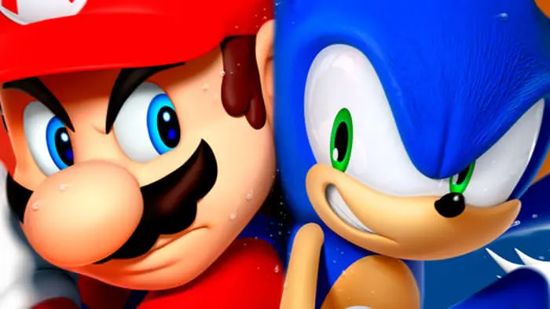
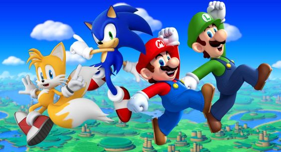
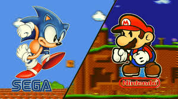

Nintendo y Sega
La lucha y la Union de Nintendo y Sega
Nintendo y SEGA son compañías muy importantes dentro de la industria del videojuego.
Ambas han rivalizado durante muchos años, pero ahora ese enfrentamiento se ha trasladado
a la gran pantalla.

Super Mario Bros. La película ha sido todo un éxito. La película centrada en el universo de uno
de los personajes más famosos de Nintendo ha dado mucho que hablar en las últimas semanas.
SEGA ya lleva unos cuantos años de ventaja en este aspecto. Primero, con sus dos películas live action
producidas junto a Paramount Pictures, las cuáles resultaron ser todo un éxito en taquilla. Además,
ya tienen planeado el lanzamiento de dos series relacionadas con el universo del erizo azul.

La eterna rivalidad entre Nintendo y SEGA
La rivalidad existente entre Nintendo y SEGA se remonta a la época de la Master System y la NES.
Esto nos lleva a finales de los 80, una época dorada para los videojuegos, ya que fue en esta época
donde se crearon algunas de las sagas más icónicas de ambas compañías. Por un lado, Super Mario Bros
se lanzó en 1985 para la NES. Unos años más tarde, SEGA lanzaría Sonic the Hedgehog; un juego con el
que pretendía plantarle cara al popular fontanero del bigote. Esto ocurrió en 1991 y desde entonces,
ambas compañías y sus personajes han estado rivalizando entre ellas a nivel económico y popular.
Este conflicto se intensificó con la llegada de las tres dimensiones. Tanto SEGA como Nintendo sacaron
al mercado sus consolas de nueva generación y con ellas una serie de juegos con los que pretendían
explotar el potencial de sus máquinas. Fue así como llegaron al mercado, Super Mario 64 y Sonic Adventure.
Dos juegos que acabarían convirtiéndose en auténticos referentes dentro de sus respectivas franquicias.

Regresar